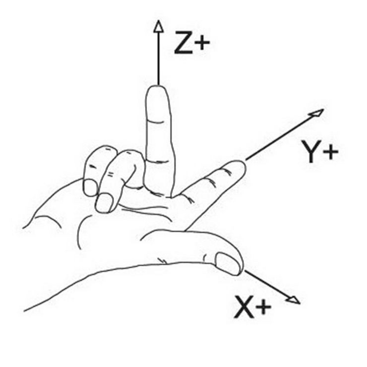

Advice on building your own CNC plasma table
This page is for those who want to build their own table from scratch, like I did. I mostly followed Bob's design from the Making Stuff YouTube channel. He has a series where he covers most of the basic hardware needed to fabricate your own table. I think he still has a BOM somewhere covering things like the square tubing, linear rails, sensors etc. Where his design and mine differ though, is of course the control software. Bob went with LinuxCNC and Mesa hardware. This is a perfectly sane choice to make. The less sane choice is to fork the GRBL firmware and write your own control software. Naturally, I picked the second option.
Going down this rabbit hole of writing much of the software myself has taught me a lot. Money-wise I'd say I would have saved a lot by going with the Mesa hardware, considering the time it took to get the software right. But where's the fun in that? Besides, this project should enable others out there to build their CNC tables for really cheap. I'm running NanoCut on an old Raspberry Pi 4, and it is controlling the table through an old Arduino Nano. Mesa does have cheaper alternatives today than they did back when I started. Had this been available then, this is probably the route I would go. On the other hand, you can run NanoCut on whatever laptop you have available, so CNC control is basically just the price of an Arduino.
Why use NanoCut at all?
There are many other solid choices out there, varying in prices and complexity. Even though I started this project a long time ago, I still think NanoCut is a good option today. It's free, extremely easy to use, and it is cross platform. The most difficult part about it would be to configure GRBL and flashing the firmware, but even that is already mostly taken care of if you reuse my own configuration. Once you've wired up the plasma to the controller and configured GRBL, going from a .dxf to cutting will be a piece of cake.
Pitfalls to avoid when building your table
Building my table was mostly a straight-forward process. You take measurements, cut tubes, weld, drill, tap, make cables, 3D-print a bit, and Bob's your uncle. The main roadblocks I hit were software related, and that is partly because I didn't do my research ahead of time. This mainly came down to the coordinate system.
The right-hand rule
I oriented my machine in a way that made sense for my workshop. My reasoning was: "I'll be running GRBL, it's so configurable that it won't be a problem". Silly me. I tried putting the origin in the bottom-right corner of the machine. Trying to make that work was a dead end, so I flipped the gantry and repositioned my homing sensors.
If you google the "right hand rule", you'll see a number of different configurations. Turns out, people from different backgrounds seem to have different interpretations of it. So much for it being a rule, eh? The one that best fits my mental model of how GRBL works is this one:

This image tells me that the origin of the machine should be in the bottom left corner. If you think like a CNC machine, you might disagree with me, thinking: "THE ORIGIN SHOULD BE IN THE TOP RIGHT!!1". Both would be correct. The thing is: GRBL always represents Machine Coordinates (MCS) internally as negative values. From this perspective, the origin is in the top right corner. My brain seems to operate in workspace coordinates though, so the image above feels more natural to me.
IMPORTANT
Because of how I ended up implementing machine jogging, where +X (right arrow key) sends a negative machine coordinate (same for Y), my advice is to just put your origin in the bottom left corner. For the Z axis, the origin is (internally) at the lowest possible torch position. But you should of course wire it so that it searches upwards for the switch. After homing, a WCS offset is applied to the Z axis so that the top position has the maximum Z coortinate.
Technically, GRBL will even allow you to home toward any corner with per-axis
homing inversion and set that as your origin through HOMING_FORCE_SET_ORIGIN.
Avoid doing any of these things with NanoCut. I'm pretty sure things will get
weird quickly with motion commands and soft limits. You should not need "Invert
homing direction X/Y/Z" or HOMING_FORCE_SET_ORIGIN if your machine is
"properly" set up.
Just do it
Building a CNC machine is fun. It's a somewhat strange feeling building a machine and then seeing it produce parts that would take you days or weeks to do by hand. You'll realize it can greatly help you in replicating itself. The first parts I made on my machine were new gantry plates (the ones bolted to the linear bearings), due to a poor initial design on the ones I drilled and tapped by hand. Having built the machine from scratch makes seeing it re-produce the parts in seconds all the more rewarding. So should you DIY it? Shia seems to think so